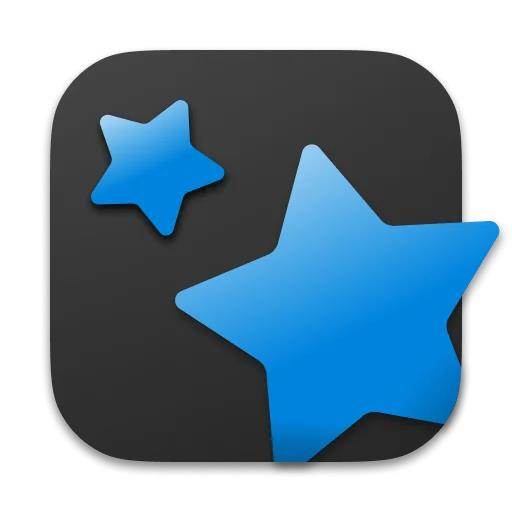
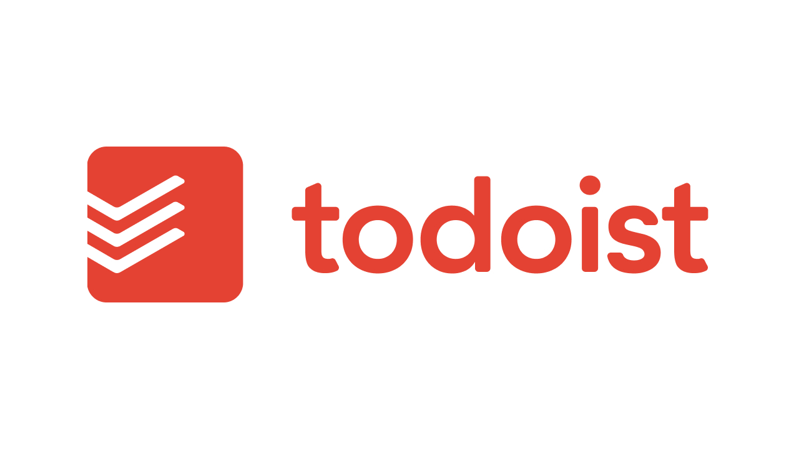

"Time is your most valuable resource.Unlock the power of effective time managment and start shaping your path to success today."
Contents :
The importance of time managment
effective time management techniques
Using Digital Tools for Time Management
Time managment is essential for academic success. this page will cover effective techniques and tips for organizing your study and managing time during exams . |
 |
- The importance of time managment
- Reduce stress:
When you have a clear plan for organizing your time , you will be able to handle tasks better and reduce feelings of stress and pressure.
- Increase productivity:
By organizing your time , students can complete tasks in less time and more efficiently.
- Achieve a balance between studying and personal life:
Time management doesn't just mean continuous studying, it also enables you to allocate time for rest and social activities that contribute to your mental health.


- Reduce stress:
- effective time management techniques
Here are some effective techniques that can help you improve your time management skills.
- Promodoro technique:
The idea is to divide study time into short periods, usually 25 minutes followed by short break for 5 minutes.
This technique helps increase focus and have regular breaks.
How to use it?
- Chose a task to do.
- Set a timer for 25 minutes.
- Work on the task until the timer goes off.
- Take a short break for 5 minutes.
- After 4 periods, take a longer break for(15-30 minutes).
For more informations about "Promodoro technique" visit this link!!
- Time blocking technique:
The idea is to allocate specific times for completing tasks instead of dealing with them randomly.
This technique helps create a clear daily plan, allowing you to fully focus on the current task without distractions.
How to use it?
- Divide the day into time slot.
- Allocate aspecific time slot for each activity(study,break,sport,etc)
- wake up
- taking breakfast
- go to university
- taking lectures
- little break and snaks
- finishing lectures
- see some friends
- go back home
- taking lunch
- little rest
- starting study
- completing study with few breaks
- doing sport or go to the gym
- take a shower
- taking dinner
- finishing study , get ready to sleep
- Stick to these slots as much as possible.
Managing time with time blocking technique Morning Afternoon night 8 A.M. - 10 A.M. 10 A.M. - 12 P.M. 12 P.M. - 3 P.M. 3 P.M. - 6 P.M. 6 P.M. - 8 P.M. 8 P.M. - 11 P.M.
For more informations about "Time blocking technique" visit this link!!
- The 80/20 Rule (pareto's Law):
The idea is that 80% of your results come from 20% of your effort.
This rule helps you focus on the most important tasks that give you the most value in the least amount of time.
How to use it?
- Identify the tasks that contribute the most to your academic success.
- Focus on these tasks first.
For more informations about "The 80/20 Rule (pareto's Law)" visit this link!!
- Promodoro technique:
- Using Digital Tools for Time Management
In the digital age, digital tools offer various options that help students organize their time and increase their productivity


.jpg)
Task and time management apps Benefits:
- Time organization and priority setting.
- Increased productivity and reduced distractions.
- Reminders for important tasks and deadlines.
By using these tools you can manage yor time in a convenient and productive way.
Return to top